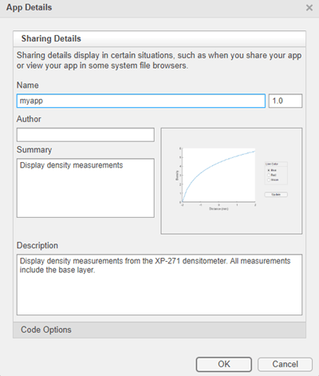
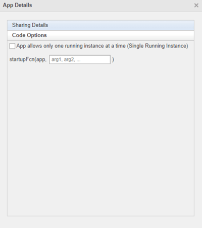

Ways to Share Apps
There are several ways to share your apps.
Share MATLAB Files Directly — This approach is the simplest way to share an app, but your users must have MATLAB® installed on their systems, as well as other MathWorks® products that your app depends on. They must also be familiar with executing commands in the MATLAB Command Window and know how to manage the MATLAB path.
Package Your App — This approach uses the app packaging tool provided with MATLAB. When your users install a packaged app, the app appears in the Apps tab in the MATLAB Toolstrip. This approach is useful for sharing apps with larger audiences, or when your users are less familiar with executing commands in the MATLAB Command Window or managing the MATLAB path. As in the case of sharing MATLAB files directly, your users must have MATLAB installed on their systems (as well as other MathWorks products that your app depends on).
Create a Deployed Web App — This approach lets you create apps that users within an organization can run in their web browsers. To deploy a web app, you must have MATLAB Compiler™ installed on your system. Your users must have a web browser installed that can access your intranet, but they do not need to have MATLAB installed.
Create a Standalone Desktop Application — This approach lets you share desktop apps with users that do not have MATLAB installed on their systems. To create the standalone application, you must have MATLAB Compiler installed on your system. To run the application, your users must have MATLAB Runtime installed on their systems. For more information, see https://www.mathworks.com/products/compiler/matlab-runtime.html.
Share MATLAB Files Directly
If you created your app programmatically, share all .m files and
other dependent files with your users.
If you created your app in App Designer, share the .mlapp file and
all other dependent files with your users. To provide a richer file browsing experience for
your users, provide a name, version, author, summary, and description by clicking
App Details
in the Designer tab of the App
Designer toolstrip. The App Details dialog box also provides an option
for specifying a thumbnail. If you do not specify a thumbnail, App Designer captures a
screen shot and updates the thumbnail automatically when you run the app.
MATLAB provides your app details to some operating systems for display in their file
browsers. Specifying apps details also makes it easier to package and compile your apps. The
.mlapp file provides those details automatically to those
interfaces.

To specify input arguments and whether your app can run multiple instances at a time or only a single instance, expand the Code Options section and select from the available options.

Package Your App
To package your app and make it accessible in the MATLAB Apps tab, create an MLTBX file by following the steps in Package Apps in App Designer. The resulting MLTBX file includes all dependent files.
You can share the MLTBX file directly with your users. To install it, they must double-click the file in the MATLAB Files panel.
Alternatively, you can share your app as an add-on by uploading the MLTBX file to MATLAB Central File Exchange. Your users can find and install your add-on from the MATLAB toolstrip by performing these steps:
In the MATLAB toolstrip, on the Home tab, in the Environment section, click the Add-Ons
 icon.
icon.Find the add-on by browsing through available categories on the left side of the Add-On Explorer window. Use the search bar to search for an add-on using a keyword.
Click the add-on to open its detailed information page.
On the information page, click Add to install the add-on.
Note
Although MLTBX files can contain any files you specify, MATLAB Central File Exchange places additional limitations on submissions. Your app cannot be submitted to File Exchange when it contains any of the following files:
MEX-files
Other binary executable files, such as DLLs. (Data and image files are typically acceptable.)
Create a Deployed Web App
Web apps are MATLAB apps that can run in a web browser. You create an interactive MATLAB app using App Designer, package it using MATLAB Compiler, and host it using either the development version of MATLAB Web App Server™ in MATLAB Compiler or the MATLAB Web App Server product. Each web app has a unique URL and can be accessed from a web browser using HTTP or HTTPS protocols. The server has a home page listing all available hosted web apps. You share web apps by sharing the unique URL to a web app or the URL to the home page of the server.
Creating web apps requires MATLAB Compiler, and only apps designed using App Designer can be deployed as web apps. In addition, certain functionality is not supported in deployed web apps. For more information, see Web App Limitations and Unsupported Functionality (MATLAB Compiler).
Once you have MATLAB
Compiler on your system, package your MATLAB app into a web app from within App Designer by clicking
Share
in the Designer tab and selecting
Web App. You can deploy your web app directly to the server by
specifying the server URL in the packaging dialog. The format of the server URL is:
https://.webAppServer:PortNumber/webapps/home/index.html
The ability to directly upload your web app to a server is only supported in the MATLAB Web App Server product and requires authentication to be enabled. For details, see Authentication (MATLAB Web App Server).
For more information on web apps, see Web Apps (MATLAB Compiler).
Create a Standalone Desktop Application
Creating a standalone desktop application lets you share an app with users who do not have MATLAB on their systems. However, you must have MATLAB Compiler installed on your system to create the standalone application. Your users must have MATLAB Runtime on their systems to run the app.
Once you have MATLAB Compiler on your system, you can open the Application Compiler from within App Designer by clicking Share in the Designer tab and selecting Standalone Desktop App.
If you used GUIDE or created your app programmatically, you can open the Application Compiler from the MATLAB Toolstrip, on the Apps tab, by clicking the Application Compiler icon.
See Create Standalone Application from MATLAB (MATLAB Compiler) for instructions on using the Application Compiler.